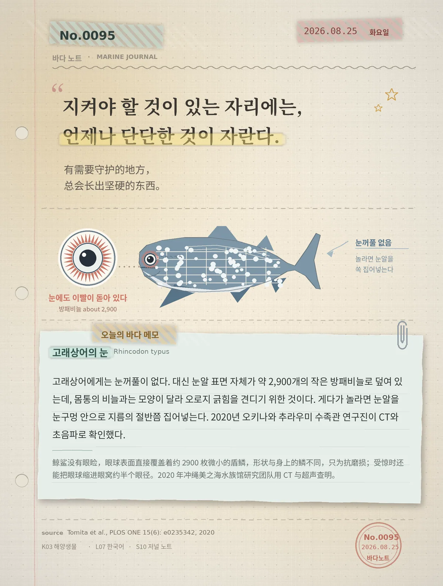

지켜야 할 것이 있는 자리에는, 언제나 단단한 것이 자란다.（有需要守护的地方，总会长出坚硬的东西。）
고래상어에게는 눈꺼풀이 없다. 대신 눈알 표면 자체가 약 2,900개의 작은 방패비늘로 덮여 있는데, 몸통의 비늘과는 모양이 달라 오로지 긁힘을 견디기 위한 것이다. 게다가 놀라면 눈알을 눈구멍 안으로 지름의 절반쯤 집어넣는다. 2020년 오키나와 추라우미 수족관 연구진이 CT와 초음파로 확인했다.（鲸鲨没有眼睑，眼球表面直接覆盖着约 2900 枚微小的盾鳞，形状与身上的鳞不同，只为抗磨损；受惊时还能把眼球缩进眼窝约半个眼径。2020 年冲绳美之海水族馆研究团队用 CT 与超声查明。）